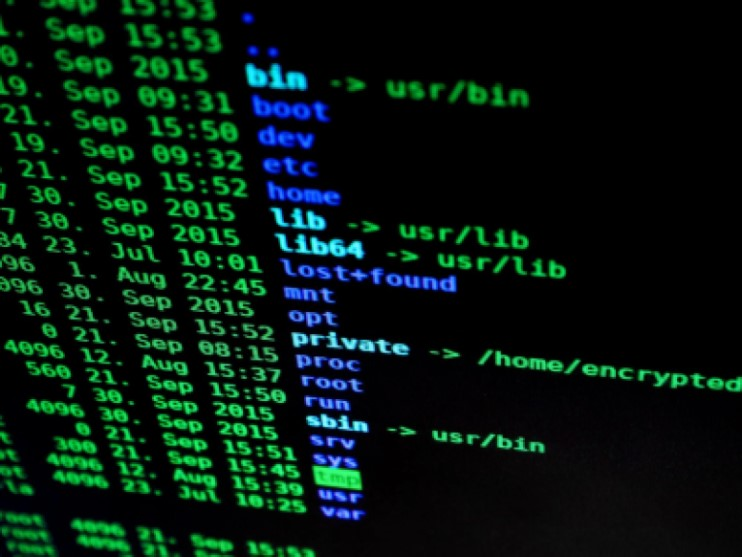

Hello there! I'm Sean Burch, an aspiring IT professional with a deep-seated passion for the ever-evolving world of technology. My journey began with foundational IT courses at Purdue University Global, further solidifying my technical knowledge at Blue Ridge Community and Technical College. Now, I'm expanding my horizons at Michigan State University, pursuing a Bachelor of Computer Science and anticipating my graduation in May 2024.
My drive for academic and professional excellence is mirrored by my memberships in esteemed honor societies like Phi Kappa Phi and Golden Key. As I journey through the tech realm, I'm also working towards pivotal certifications like CompTIA Security+ and CCNA to bolster my expertise.
However, this blog is not just about my technical accomplishments. Here, close friends, family, and past employers have come together to share their personal experiences and interactions with me. Their narratives provide a unique lens into my character, work ethic, and the relationships I've cultivated over the years.
So, whether you're keen to learn more about my professional endeavors or you're here to read firsthand accounts from those who know me best, you've come to the right place. Dive in and get to know me better. Welcome to my blog!
